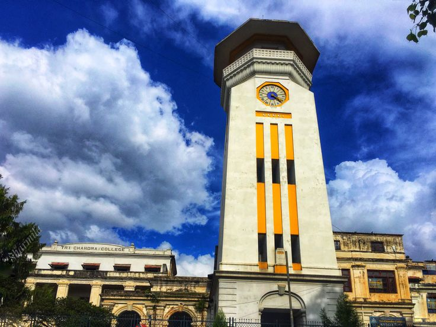

PROGRAM OF TRICHANDRA
- BSc (CBZ, GBZ, PSM, GPM,BCZ)
- BA (ART, POLITICAL SCIENCE)
WHY TRICHANDRA??
- oldest campous of nepal
- best science campous
- experienc techers
ABOUT TRICHANDRA
Trichandra is the oldest campous of Nepal. Trichandra is also known as the science campous. Trichandra campous was establishment in 1918.

trichandra